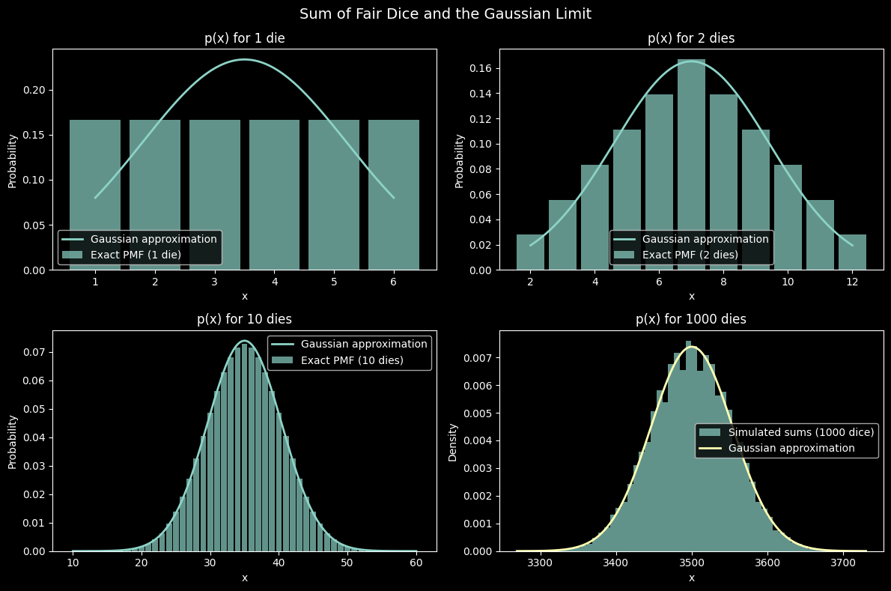
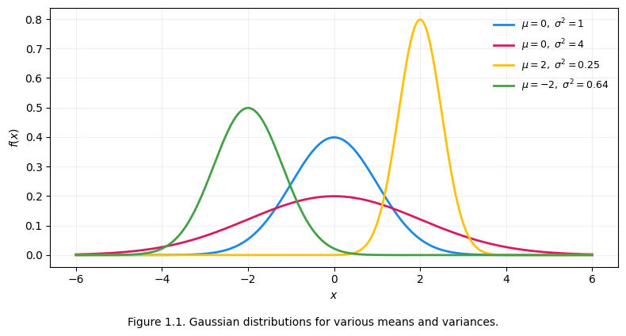
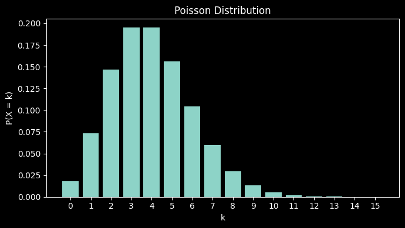
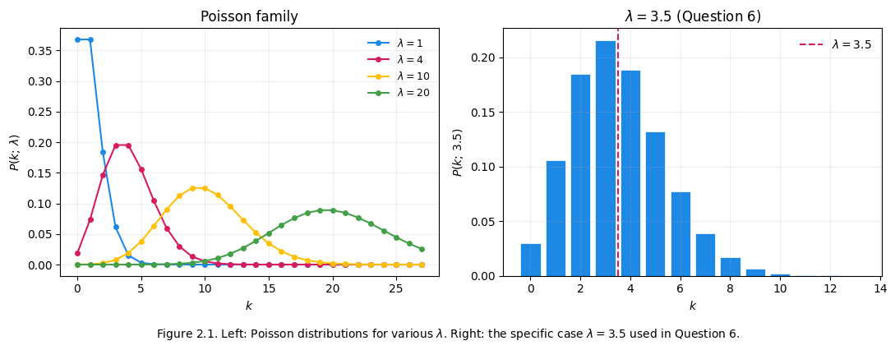
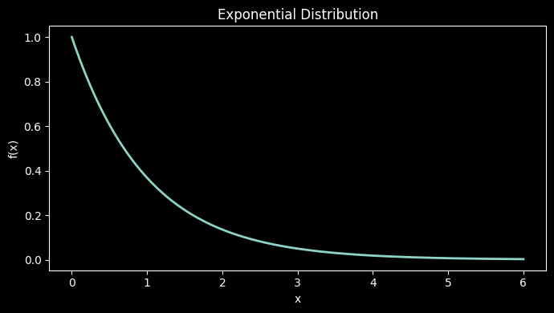
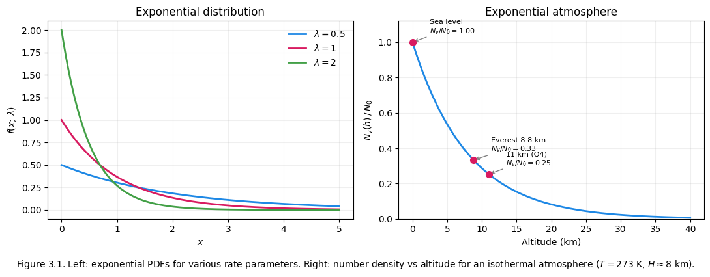
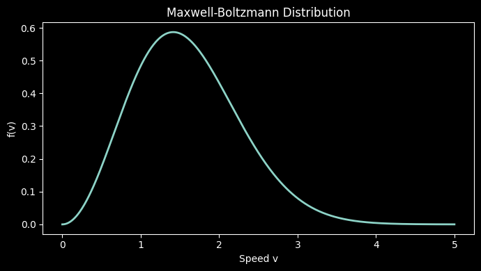

7. Statistical Distributions in Thermodynamics#
Relevant readings and preparation:
Concepts in Thermal Physics: Chapters 4–5, 13–14
University Physics with Modern Physics 15th edition: Chapters 18, 38–39
Introductory Statistics 2e: Chapters 4–6
Learning outcomes:
Understand why statistical descriptions are essential in thermal physics
Define and apply the Gaussian and Poisson distributions
Derive and use the Maxwell–Boltzmann speed distribution
Apply the barometric formula and explain exponential decay of atmospheric pressure
Derive the mean free path and apply it to real gases
Use the Boltzmann entropy formula \(S = k_B \ln \Omega\)
Distinguish classical from quantum statistics; describe the Fermi–Dirac distribution
A cubic centimetre of air at room temperature contains around \(2.7 \times 10^{19}\) molecules — each colliding billions of times per second. Tracking every molecule individually is impossible. What saves us is that the collective behaviour of enormous numbers of particles is remarkably regular: macroscopic quantities like temperature and pressure emerge as averages, and those averages obey precise probability distributions. This chapter builds the statistical toolkit needed to describe gases, from everyday conditions down to the quantum regime.
In thermal physics, we often study systems comprised of an enormous number of particles. Instead of tracking the exact trajectories of each particle exhaustively, we rely on probability distributions which describe the typical behaviour of the system as a whole. The Gaussian, Poisson, and Maxwell–Boltzmann distributions are especially important because they each capture a common pattern observed in physical processes present in thermodynamics. Understanding these distributions helps in explaining how microscopic randomness produces the macroscopic behaviour we observe.
7.1. Gaussian Distributions#
The most important of the distributions is the Gaussian (or Normal) distribution. The Central Limit Theorem guarantees that any quantity formed by summing many small, independent random contributions converges to a Gaussian — regardless of what those contributions look like individually. Energy fluctuations, measurement noise, and small departures from equilibrium all follow this pattern. In practice, the Gaussian serves as a “default” model for fluctuations in thermal systems, reflecting how microscopic randomness smooths out into predictable macroscopic behaviour.
{kind=link}

Fig. 7.1 For one die, the probability distribution is uniform, preferring no value over any other. With two dice, the probability increases uniformly for each outcome, and then decreases once reaching 7, the most likely outcome (6 of 36 combinations result in a 7). As the number of dice used increase, the structure of the Gaussian distribution is retrieved, as is shown in the 1000 dice case.#
The Gaussian probability density function for a continuous random variable \(x\) is:
Parameter |
Meaning |
|---|---|
\(\mu\) |
Mean — the location of the peak |
\(\sigma^2\) |
Variance — controls the width |
\(\sigma\) |
Standard deviation |
Because the Gaussian is symmetric, the mean, median, and mode all coincide. The special case \(\mu = 0\), \(\sigma = 1\) is called the standard normal distribution.

In thermal physics: each Cartesian component of a molecule’s velocity follows a Gaussian,
with \(\mu = 0\) (no preferred direction) and \(\sigma^2 = k_B T/m\). The spread grows with temperature — a first hint that temperature is a measure of the width of the molecular velocity distribution.
7.2. Poisson Distributions#
Many measurements consist of rare events which, should their occurrence be independent, are accurately modelled with the Poisson distribution.
{kind=link}

Fig. 7.2 The Poisson distribution has a characteristic tail, where the nature of events occurring is strictly non-negative and discrete.#
The Poisson distribution is important whenever we count events that occur randomly and independently. In thermal physics, this becomes especially relevant when we measure how often certain microscopic events occur over time — for example, molecular collisions, detections of radioactive decay events, or the number of particles crossing a surface. These processes involve random events happening at an approximately steady average rate, which makes the Poisson distribution well-suited to describing them.
If on average \(\lambda\) events occur per interval, the probability of exactly \(k\) events is:
The parameter \(\lambda\) can be thought of as a rate parameter, controlling the frequency of occurrence for whatever event it is being used to describe. Both the mean and the variance equal \(\lambda\):
The fractional uncertainty in a counting experiment is therefore \(\sigma/\langle k\rangle = 1/\sqrt{\lambda}\) — doubling the counting time halves the relative error.

Binomial |
Poisson |
|
|---|---|---|
Outcomes per trial |
2 (success/failure) |
Count of events |
Parameters |
\(n\) (trials), \(p\) (prob.) |
\(\lambda\) (mean rate) |
Mean |
\(np\) |
\(\lambda\) |
Variance |
\(np(1-p)\) |
\(\lambda\) |
Limit |
General |
\(n\to\infty\), \(p\to0\), \(np=\lambda\) |
This distribution helps us understand the size of fluctuations in measurements and explains the origin of shot noise: the unavoidable statistical variations in the number of detected events, even when the average rate stays constant.
Connection to the binomial distribution#
The Poisson distribution arises as the limit of the binomial \(P(n,k) = \binom{n}{k}p^k(1-p)^{n-k}\) when \(n \to \infty\) and \(p \to 0\) with \(np = \lambda\) held fixed. In other words: when an event is rare but the number of opportunities is very large, Poisson statistics apply.
For \(\lambda \gtrsim 20\), the Poisson distribution becomes approximately Gaussian with \(\mu = \lambda\), \(\sigma^2 = \lambda\).
Example: molecules in a small volume
Suppose the mean number of gas molecules in a tiny fixed volume is \(\lambda = 3.5\). What is the probability of finding exactly 3 molecules?
So there is roughly a 1-in-5 chance of counting exactly 3 molecules — even though 3 is the closest integer to the mean. The Poisson distribution captures the inherent randomness in such counts.
7.3. Exponential Distributions#
The exponential distribution describes the probability of a continuous quantity that decays (or grows) at a constant proportional rate. It appears whenever the chance of an event occurring in the next small interval is independent of how long you have already been waiting — a property called memorylessness, true only for the exponential and geometric distributions.
{kind=link}

Fig. 7.3 As in the Poisson case, we have a decay as \(x\) increases, though this model is ubiquitous across all fields of physics - note that it is firstly simpler (and in fact one of the terms of the Poisson distribution) and secondly continuous.#
The probability density function is:
where \(\lambda > 0\) is the rate parameter. The mean and standard deviation are both \(1/\lambda\):
Notice that \(\sigma = \langle x \rangle\) — the spread is always equal to the mean, a distinctive signature of exponential behaviour.
In thermal physics the exponential distribution arises directly from the Boltzmann factor: the probability of a system having energy \(E\) is proportional to \(e^{-E/k_BT}\). Any time energy or another additive cost grows linearly with some variable, the probability of reaching a given value falls off exponentially. Common examples include:
Number density of a gas as a function of altitude (potential energy \(= mgh\))
Population of an excited atomic state (energy gap \(\Delta E\))
Intensity of radiation absorbed through a material (Beer–Lambert law)
Time between molecular collisions (links to mean free path, Section 5)
The Boltzmann factor#
For a system in thermal equilibrium at temperature \(T\), the probability of occupying a state with energy \(E\) is proportional to:
This single expression is the engine behind every exponential distribution in thermodynamics.
Application: The Exponential Atmosphere#
The Earth’s atmosphere can be viewed as a large thermodynamic system composed of a mixture of gases surrounding the planet and interacting continuously with solar radiation and the surface of the Earth. The temperature, pressure, and motion of the atmosphere determine weather patterns and regulate the global climate.
The atmosphere is heated primarily by solar radiation and cooled by infrared radiation emitted back into space. Gravity produces strong vertical pressure gradients, while temperature differences across the Earth’s surface generate horizontal pressure gradients that drive winds and large-scale circulation.
The Earth’s atmosphere is composed mainly of nitrogen (~78%), oxygen (~21%), and trace gases (argon, carbon dioxide, water vapour, etc.). Despite their small concentrations, trace gases can significantly affect thermodynamic behaviour due to their interaction with radiation. The atmosphere is divided into layers based on temperature variation with altitude: the troposphere (~0–12 km, where weather occurs), the stratosphere, the mesosphere, and the thermosphere.
A striking consequence of the Boltzmann factor is that atmospheric pressure decreases exponentially with altitude. We know that pressure decreases as a function of altitude — but by how much? To answer this precisely, we combine the ideal gas law with a force balance.
Number density and pressure
The number density \(N_v\) is the number of molecules per unit volume:
From the ideal gas law \(PV = Nk_BT\):
Pressure is proportional to the number of molecules per unit volume times temperature.
Hydrostatic equilibrium
Consider a thin horizontal slice of atmosphere at height \(h\), with area \(A\) and thickness \(dh\). The forces acting on it are:
Balancing these (the slab is stationary):
Substituting \(N_v = P/k_B T\) at constant temperature:
The barometric formula
Separating variables and integrating from sea level (\(P_0\) at \(h_0 = 0\)) to height \(h\):
where \(H = k_BT/mg\) is the scale height — the altitude over which pressure falls by a factor of \(e\). Since \(N_v = P/k_BT\), the number density follows exactly the same exponential:
This is precisely the Boltzmann factor \(e^{-E/k_BT}\) applied to gravitational potential energy \(E = mgh\). For air at \(T = 273\,\text{K}\) with \(m = 4.8\times10^{-26}\,\text{kg}\):
Example: pressure on Everest and Ben Nevis
Assume no change in temperature (\(T = 273\,\text{K}\), i.e. \(0^\circ\)C) and average molecular mass \(m = 4.8\times10^{-26}\,\text{kg}\).
Mount Everest (\(h = 8848\,\text{m}\)):
Ben Nevis (\(h = 1344\,\text{m}\)):
Horizontal pressure gradients and atmospheric motion
Uneven solar heating across the Earth’s surface creates horizontal pressure differences: warmer regions become less dense, generating pressure gradients. Air flows from high to low pressure, driving wind. Due to Earth’s rotation, moving air is deflected by the Coriolis force, causing rotation around low-pressure regions rather than direct inward flow — this is the origin of cyclones and anticyclones.
Radiation balance
The Earth’s temperature is set by the balance between incoming solar radiation and outgoing thermal radiation. The incoming energy per unit area is \(S(1-\alpha)/4\), where \(S \approx 1360\,\text{W\,m}^{-2}\) is the solar constant and \(\alpha\) is the albedo. At equilibrium:
where \(\sigma\) is the Stefan–Boltzmann constant. The Earth’s actual surface temperature is higher than this simple estimate because greenhouse gases (water vapour, CO\(_2\), methane, nitrous oxide) absorb outgoing infrared radiation and re-emit it in all directions, trapping heat in the lower atmosphere. Increasing greenhouse gas concentrations reduce heat loss to space, shifting radiative equilibrium and raising surface temperature.

7.4. Maxwell–Boltzmann Distributions#
The Maxwell–Boltzmann distribution is named after James Clerk Maxwell and Ludwig Boltzmann, and was first defined for describing particle speeds in idealised gases. The Gaussian tells us about individual velocity components; what about the distribution of molecular speeds — the magnitude \(v = \sqrt{v_x^2+v_y^2+v_z^2}\)? This connects directly to measurable quantities: pressure, diffusion rates, collision rates, and heat transfer all depend on how fast molecules are moving.
{kind=link}

Fig. 7.4 The Maxwell–Boltzmann distribution is even moreso akin to the Poisson distribution - asymmetric, undefined below 0, with a peak at some value above 0. Note that it differs significantly in use however, as it is continuous.#
Because each component \(v_x, v_y, v_z\) is an independent Gaussian (Section 1), transforming to spherical coordinates in velocity space introduces a geometric factor — the surface area of a sphere of radius \(v\) in velocity space — giving the Maxwell–Boltzmann speed distribution:
The Maxwell–Boltzmann distribution plays a central role in kinetic theory because it describes the spread of particle speeds in a classical ideal gas. It shows that, at a given temperature, some particles move slowly while others move very fast, and it gives precise predictions for the most probable speed, the average speed, and the rms speed. These predictions feed directly into calculations of pressure, diffusion, heat transfer, and collision rates. In essence, this distribution connects random molecular motion to the observable properties of gases.
The \(v^2\) factor means the distribution is zero at \(v=0\) and right-skewed. Three characteristic speeds summarise it:
with \(v_p < \langle v \rangle < v_{\mathrm{rms}}\) — a direct consequence of the right skew.
Physical intuition:
Increasing \(T\) broadens the distribution and shifts all three speeds to higher values — at higher temperature the distribution is broader, at lower temperature it is narrower.
Lighter molecules move faster at the same \(T\) — this is why hydrogen escapes Earth’s atmosphere while heavier nitrogen and oxygen do not.
All energy states remain accessible to classical particles, in contrast to the quantum case (Section 6).
Cell In[5], line 32
Line2D([0],[0], color='grey', linestyle='--', label=r"$\langle v
^
SyntaxError: unterminated string literal (detected at line 32)
Example: rms speed of nitrogen at 300 K
For \(N_2\) (\(m = 28\times10^{-3} / 6.022\times10^{23} = 4.65\times10^{-26}\,\text{kg}\)) at \(T = 300\,\text{K}\):
This is faster than the speed of sound in air (\(\approx 343\,\text{m\,s}^{-1}\)), which makes sense: pressure waves propagate by molecular collisions, so molecular speeds set the upper bound on sound speed.
7.5. Mean Free Path#
We know how many molecules there are per unit volume and how fast they move. The next natural question: how far does a molecule travel before colliding with another one? This is the mean free path \(\lambda\), a quantity that controls viscosity, thermal conductivity, and the design of vacuum systems.
At ambient pressure (\(P = 101325\,\text{Pa} = 1013\,\text{hPa}\)), the number density is \(N_v = 2.7\times10^{25}\,\text{molecules\,m}^{-3}\) and the mean free path is \(\lambda \approx 68\,\text{nm}\) — about 200 molecular diameters. This means that out of \(2.7\times10^{25}\) molecules in a cubic metre, each one travels on average only 68 nm before colliding with another. In high vacuum (\(P < 10^{-7}\,\text{Pa}\)), \(\lambda\) stretches to \(\sim 10^5\,\text{km}\), meaning molecules travel vast distances without collision — a regime essential for particle accelerators, electron microscopes, and space simulation chambers.
Derivation#
Treat molecules as hard spheres of diameter \(d\). An equivalent picture: one molecule moves as a point particle while all others are expanded to diameter \(2d\). A molecule moving with velocity \(v\) sweeps out a cylindrical collision volume \(\pi d^2\,vt\) in time \(t\), and collides with every molecule whose centre lies inside this cylinder.
More accurately, accounting for the relative motion between the moving molecule and its targets (the average relative speed is \(\sqrt{2}\,v\)):
The second form makes the pressure dependence explicit: halving the pressure exactly doubles the mean free path.
Example: nitrogen at 20°C
At \(T = 293\,\text{K}\) (\(20^\circ\)C), \(P = 10^5\,\text{Pa}\), and molecular diameter \(d = 2\times10^{-10}\,\text{m}\):
Step 1 — Number density:
Step 2 — Mean free path:
Example: finding temperature from mean free path (Question 2)
If \(\lambda = 200\,\text{nm}\), \(d = 0.2\,\text{nm}\), and \(P = 101325\,\text{Pa}\), find \(T\).
Rearranging \(\lambda = k_BT/(\sqrt{2}\,\pi d^2 P)\):
7.6. Quantum Statistics#
Classical vs Quantum Description#
So far we have dealt with molecules treated as classical, distinguishable particles. This is justified when the thermal de Broglie wavelength \(\lambda_{dB}\) is much smaller than the inter-particle spacing — i.e. when:
In this classical limit, particles are distinguishable and the Maxwell–Boltzmann distribution applies. This is not true for electrons, which are an example of fermions, or for photons, which are bosons.
In quantum mechanics, identical particles are truly indistinguishable: swapping two particles produces no observable change. This leads to two fundamentally different particle types with very different statistical behaviour:
Particle Type |
Examples |
Statistics |
Principle |
|---|---|---|---|
Fermions |
Electrons, protons, neutrons |
Fermi–Dirac |
Pauli exclusion |
Bosons |
Photons, phonons, \(^4\)He |
Bose–Einstein |
No restriction |
The Pauli exclusion principle states that two or more identical fermions cannot occupy the same quantum state at the same time. Electrons occupy the lowest available energy levels first, filling them one by one. This is in direct contrast to photons, which can all occupy the same energy level simultaneously.
Energy Levels, Bands, and the Boltzmann Distribution#
Energy levels in atoms are discrete: \(n = 1, 2, 3, \ldots\) with associated orbitals s, p, d, … . When many atoms are brought together to form a solid, their wavefunctions combine and energy levels split into closely spaced bands.
In metals (e.g. copper), electrons partially fill a conduction band and are free to move — giving rise to electrical conduction. The energy gap between the valence and conduction bands is \(E_g \sim 2\)–\(3\,\text{eV}\), while the thermal energy at room temperature is only \(k_BT \approx 0.026\,\text{eV}\) — far too small to bridge the gap in an insulator.
The classical Boltzmann distribution gives the probability that a particle has energy \(E_i\) in thermal equilibrium:
As \(T \to 0\), this suppresses all states with \(E_i > 0\), so \(p(E_i) \to 0\) for excited states and \(p(E_i) \to 1\) for the ground state — all classical particles fall into the lowest energy state. At high \(T\), all states become equally accessible.
Fermi–Dirac Distribution#
For fermions, the Pauli exclusion principle restricts each quantum state to at most one particle. The mean occupancy of a state with energy \(E\) is:
where \(E_F\) is the Fermi energy — the chemical potential at zero temperature, equal to the highest occupied energy level at \(T = 0\).
Condition |
\(f_{\mathrm{FD}}(E)\) |
Physical meaning |
|---|---|---|
\(T = 0\), \(E < E_F\) |
1 |
State definitely occupied |
\(T = 0\), \(E > E_F\) |
0 |
State definitely empty |
Any \(T\), \(E = E_F\) |
\(\tfrac{1}{2}\) |
Always half-occupied |
\(E \gg E_F + k_BT\) |
\(\approx e^{-(E-E_F)/k_BT}\) |
Recovers Boltzmann |
At \(T = 0\) the distribution is a perfect step — the Fermi sea — with all states below \(E_F\) full and all above empty. Finite temperature smears the step over a range \(\sim k_BT\) around \(E_F\).
In copper \(E_F \approx 7\,\text{eV}\) while \(k_BT \approx 0.026\,\text{eV}\) at room temperature. Only electrons within \(\sim k_BT\) of the Fermi level can be thermally excited — the vast majority are frozen deep in the Fermi sea. This is why the electronic heat capacity is far smaller than the classical prediction.
Bose–Einstein Distribution and Black-Body Radiation#
For bosons there is no restriction on occupancy. The mean number of bosons in a state with energy \(E\) is:
where \(\mu\) is the chemical potential. For photons in thermal equilibrium, \(\mu = 0\) because photons are freely created and destroyed by the cavity walls.
Black-body radiation is one of the most important applications of Bose–Einstein statistics. Thermal radiation is one of the fundamental mechanisms by which energy is transferred in nature — unlike conduction and convection, it does not require a material medium and can propagate through empty space. Every body at finite temperature emits electromagnetic radiation as a consequence of microscopic atomic and molecular transitions; thermal fluctuations continuously excite and de-excite internal energy levels, leading to the spontaneous emission of photons.
A black body is an idealised object that absorbs all incident radiation regardless of wavelength or direction. A practical realisation consists of a cavity with a small aperture: radiation entering the hole undergoes many reflections and is essentially all absorbed, while the radiation field inside depends only on temperature — not on the material. Kirchhoff’s law states:
where \(a(\nu)\) is the absorptivity and \(E_{\text{bb}}\) is the black-body emission. This implies that good absorbers are good emitters, and a perfect absorber (\(a(\nu) = 1\)) emits maximally.
Kirchhoff’s law does not determine the spectral shape. Classical physics (Rayleigh–Jeans) predicted \(u \propto \nu^2\) with no upper limit — the ultraviolet catastrophe. Max Planck resolved this in 1900 by proposing that energy is quantised in units of \(E_n = nh\nu\). The average energy per oscillator is then given by the Bose–Einstein distribution:
Combined with the density of electromagnetic modes (\(8\pi\nu^2/c^3\)), this gives Planck’s law:
The spectrum arises from two competing effects: the number of modes grows as \(\nu^2\), while the Bose–Einstein occupation falls exponentially at high frequency, producing a peak. As temperature increases, total emitted radiation increases and the peak shifts to higher frequencies.
Example: relative intensity of spectral lines
Two energy levels \(E_1\) and \(E_2\) are populated according to the Boltzmann distribution:
Given \(E_2 - E_1 = 0.20\,\text{eV}\) and \(T = 3000\,\text{K}\) (\(k_B = 8.617\times10^{-5}\,\text{eV\,K}^{-1}\)):
The higher-energy spectral line has ~46% of the intensity of the lower-energy line.
Summary: Classical vs Quantum Distributions#
Classical particles → distinguishable → Maxwell–Boltzmann: all energy states are accessible, higher energies exponentially suppressed
Fermions → Fermi–Dirac → obey Pauli exclusion: at most one particle per state, sharp Fermi sea at low \(T\)
Bosons → Bose–Einstein → no restriction: can cluster in low-energy states, gives Planck’s black-body law
Feature |
Maxwell–Boltzmann |
Bose–Einstein |
Fermi–Dirac |
|---|---|---|---|
Particle type |
Classical |
Bosons |
Fermions |
Distinguishable? |
Yes |
No |
No |
Occupancy per state |
Unlimited |
Unlimited |
\(\leq 1\) |
Distribution |
\(\propto e^{-E/k_BT}\) |
\(\dfrac{1}{e^{(E-\mu)/k_BT}-1}\) |
\(\dfrac{1}{e^{(E-E_F)/k_BT}+1}\) |
Applications |
Ideal gases, molecular speeds |
Photons, phonons, cold atoms |
Electrons in metals/semiconductors |
In the high-temperature, low-density limit — when \(e^{(E-\mu)/k_BT} \gg 1\) — both quantum distributions reduce to the classical Maxwell–Boltzmann result. Quantum indistinguishability ceases to matter, and classical statistical mechanics is recovered.
At low temperatures, quantum effects dominate: fermions are locked into the Fermi sea while bosons can undergo Bose–Einstein condensation into the ground state — a macroscopic quantum phenomenon first observed experimentally in 1995.